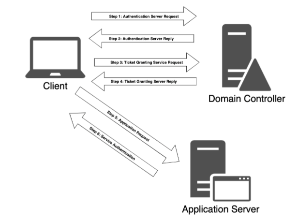

Kerberos Fucntion
Part 1. Login
1. A request is sent from client to the domian controller.
a) The domain controller must have the role of key distribution center and authentication server service.
b) This transaction is refred to as the Authentication Server Request (AS_REQ).
c) The AS_REQ contains a time stamp that is encrypted using a hash derived from the password and username of the user.
2A. The domain contorler attempts to decrypt the time stamp with the user name and password in its database.
a) If the time stamp is a duplicate, authentication will be unsucsessful (this is to mitigate replay attacks).
2B. The controller sends the sends the client an Authentication Server Reply (AS_REP).
a) The AS_REP containsa a “Session Key” and a “Ticket Granting Ticket” (TGT).
b) The session key is encrypted using the user's password hash and can be decrypted by the client and reused.
c) The TGT contains information about the client.
1. Group membership.
2. Domain name.
3. Time stamp.
4. Client IP address.
5. Session key.
d) The TGT is encrypted by a secret only known to the KDC and cannot be decrypted by the client.
Part 2. Access resources in the domain
3. The client creates and sends a “Ticket Granting Service Request” (TGS_REQ) to the KDC (key distribution center/domain controller).
a) The TGS_REQ contains, current user.
b) Time stamp (encrypted using the session key).
c) SPN of the resource.
d) Encrypted TGT.
4a. The KDC recieves the TGS_REQ.
a) The KDC checks if the SPN exists.
b) The TGT is decrypted (using the secret key only known to the KDC).
c) The session key is extracted from the TGT and is used to decrypt the username and timestamp of the request.
d) The KDC performs several checks.
1. The TGT timestamp must be valid.
2. The username from the TGS_REQ must match the username from the TGT.
3. The client IP address must match the TGT IP address
4b. If all checks are passed the Ticket Granting Service of the KDC responds to the client with a Ticket Granting Server Reply (TGS_REP).
a) The TGS_REP contains the SPN granted access to.
b) The Session Key to be used between the client and the SPN.
c) A Servcie Ticket containing.
1. The username.
2. Group Memberships.
3. The newly created session key.
Note- The whole Service Ticket is encrypted with the password hash of the service account registered with the SPN to be authenticated to. The SPN and new Session key inside of the Service Ticket are encrypted with the session key of the clients TGT.
The client now has a session key and a service ticket.
5. The client sends the application server an Application Request (AP_REQ).
a) The AP_REQ includes.
b) The username and timestamp encrypted with the Session Key for the Service Ticket.
c) The Session Key.
d) The Service Ticket.
6a. The application server recieves the AP_REQ.
a) The Service Ticket is decrypted using the service accounts' password hash extracting the username and Session key.
b) That Session Key is then used to decrypt the username from the AP_REQ.
c) If the AP_REQ username matches the one decrypted from the Service Ticket the request is accepted.
d) The service inspects the group memberships in the Service Ticket.
e) If the proper permissions are held, then access will be granted to the service.